📄 Documento Oficial de la Práctica PR03
Descarga el informe ejecutivo completo de forense digital con los 15 puntos extraídos, 27 figuras de respaldo y 5 análisis de interpretación.
Se examinó la imagen forense Narcos-1, perteneciente al equipo SK-DESKTOP (Windows 10 Pro, perfil de usuario Steve), con el objetivo de determinar qué actividades pueden demostrarse a partir del disco y qué vínculos existen con los hechos investigados: la interceptación en el aeropuerto de Wellington de dos pasajeros procedentes de Australia con un kilogramo de metanfetamina.
Evidencia Extraída
Puntos de evidencia verificados
Respaldo Gráfico
Capturas de respaldo en informe
Interpretación
Análisis de interpretación forense
Ventana Clave
29 ene – 2 feb 2019 (NZDT)
Hallazgos principales:
- Logística compatible con el caso: Una cotización de vuelos Brisbane → Wellington para dos adultos, una captura de la biblioteca de Eastbourne y dos rutas locales coinciden con el origen, destino y punto de entrega descritos en el escenario.
- Herramientas de comunicación y ocultamiento: Discord, TrueCrypt e Image Steganography fueron descargados e instalados en fechas consecutivas (29/01, 30/01 y 01/02/2019).
- Límite de la evidencia: No se recuperaron mensajes, contenedores cifrados ni imágenes con información oculta; el uso efectivo de las herramientas y la identidad del usuario no están demostrados.
Conclusión: El disco respalda que el equipo se usó para preparar un viaje y consultar lugares clave del caso, pero no basta por sí solo para vincular a una persona concreta con la distribución de drogas. Se requieren mensajes recuperados y registros externos (aerolínea o aduana) para sostener esa relación.
Una operación internacional de inteligencia alertó a las autoridades de Nueva Zelanda sobre el posible ingreso de sustancias ilícitas. John Fredricksen y Jane Esteban, procedentes de Australia, fueron interceptados en el aeropuerto de Wellington con un kilogramo de metanfetamina en una maleta. Se obtuvo información sobre dos posibles lugares de entrega: la biblioteca de Eastbourne y un inmueble en Petone.
En el inmueble de Petone, vinculado a Steve Kowhai (bajo investigación), se localizaron sustancias ilícitas, armas de fuego y una computadora de escritorio. La unidad de forense digital recibió su imagen de disco, Narcos-1, para determinar qué actividades pueden demostrarse a partir del disco, distinguiendo lo observado, lo interpretado y lo que no puede confirmarse con la evidencia disponible.
| Elemento |
Descripción |
| Evidencia | Narcos-1.zip (se conservó el archivo original y se verificó su integridad), corpus forense del escenario 2019 Narcos (Digital Corpora). |
| Herramienta | Autopsy 4.23.1: árbol de archivos, metadatos NTFS, visor de registro (NTUSER.DAT), artefactos de datos y visor hexadecimal. |
| Registro por hallazgo | Valor exacto, ruta dentro de la imagen, procedimiento y captura comprobable. |
| Zona horaria | Se reportan fechas en NZDT. Algunas capturas iniciales de Autopsy muestran CST; el visor de registro muestra UTC (por ejemplo, 28/01/2019 21:00:12 UTC = 29/01/2019 10:00:12 NZDT). |
| Criterio de análisis | Cada conclusión separa lo observado, la interpretación y lo no confirmable. Una descarga no se equipara a una ejecución, ni una ejecución a un uso efectivo. |
Tabla concentradora de los 15 puntos solicitados y respaldo gráfico de las figuras 1 a 17 (haz clic en cualquier imagen para ampliarla).
| Elemento |
Resultado |
Figura |
| Windows instalado | Windows 10 Pro (equipo SK-DESKTOP, AMD64). Artefacto: Operating System Information | 1 |
| Perfil principal | Carpeta Steve C:/Users/Steve/ | 2 |
| Clave UserAssist | C:\Users\Steve\NTUSER.DAT > Software\Microsoft\Windows\CurrentVersion\Explorer\UserAssist | 3 |
| Navegadores | Google Chrome (archivo History) y Microsoft Edge | 4 |
| MD5 de History (Chrome) | f3f979c6dee9fbb7cbdf5818aaa4b723 | 5 |
| Ruta de airport crystals.jpg | C:/Users/Steve/Documents/Misc/airport crystals.jpg | 6 |
| Creación de airport crystals.jpg | 2019-01-31 10:25:18 NZDT | 7 |
| MD5 de dropoff.jpg | 7feb763bebe42c3a3464c9ee3bb1d3e8 | 8 |
| Última modificación de dropoff.jpg | 2019-02-02 14:06:06 NZDT | 9 |
| Imagen de reservaciones de vuelo | C:/Users/Steve/Documents/Misc/flightbookings.PNG | 10 |
| MD5 de Method run.jpg | 69b225bc0ef5a0c003f1e2a6646aaf92 | 11 |
| MD5 de BNE.png | dffa98bdd7371d1806adb09db27ba283 | 12 |
| Herramienta de esteganografía | Image Steganography 1.5.2 Setup.exe en C:/Users/Steve/Downloads/ | MD5: c9b7c382dea6d7f45ae1bf437860cb69 | 13, 14 |
| Herramienta de cifrado | TrueCrypt Setup 7.1a.exe en C:/Users/Steve/Downloads/TrueCrypt Setup 7.1a.exe | 15 |
| Caché de Discord y ActivitiesCache.db | C:/Users/Steve/AppData/Roaming/Discord/Cache y C:/Users/Steve/AppData/Local/ConnectedDevicesPlatform/2418c0082017486a/ActivitiesCache.db | 16, 17 |
3.1 Sistema operativo y perfil principal
Se consultó el artefacto de información del sistema operativo, las propiedades de la cuenta y el registro de Windows del perfil principal.
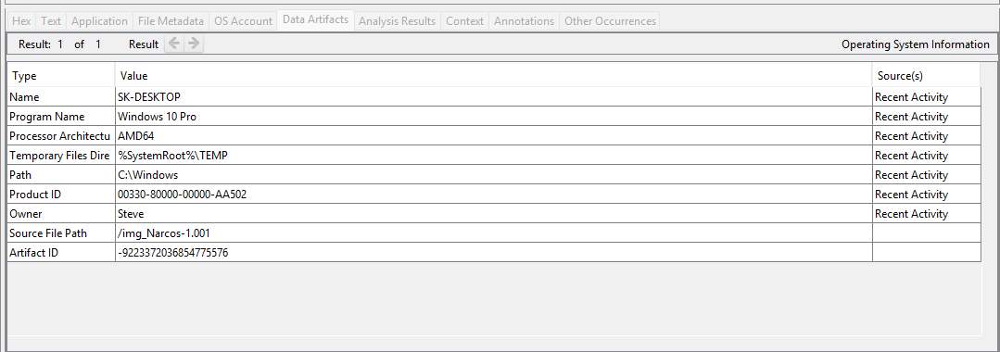
Figura 1. Operating System Information (SK-DESKTOP, Windows 10 Pro, AMD64).
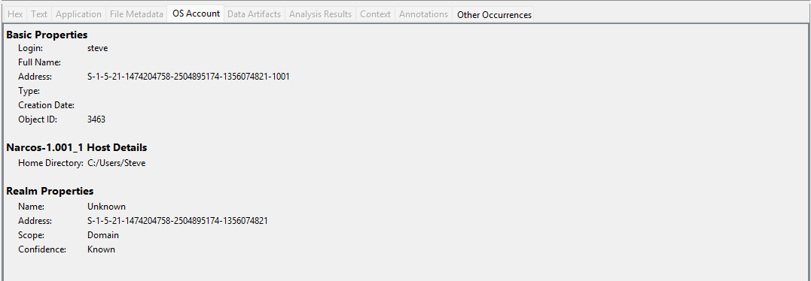
Figura 2. OS Account: login steve, SID terminado en -1001, C:/Users/Steve.
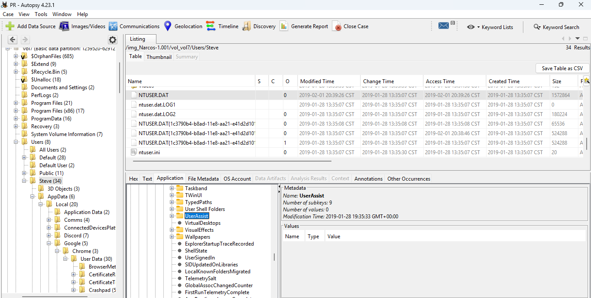
Figura 3. NTUSER.DAT en /Users/Steve y clave UserAssist (9 subclaves).
3.2 Navegación web
Inspección de los archivos de Google Chrome en Chrome\User Data\Default (85 resultados) y verificación del hash MD5 de History (f3f979c6dee9fbb7cbdf5818aaa4b723), además de la presencia de Microsoft Edge.
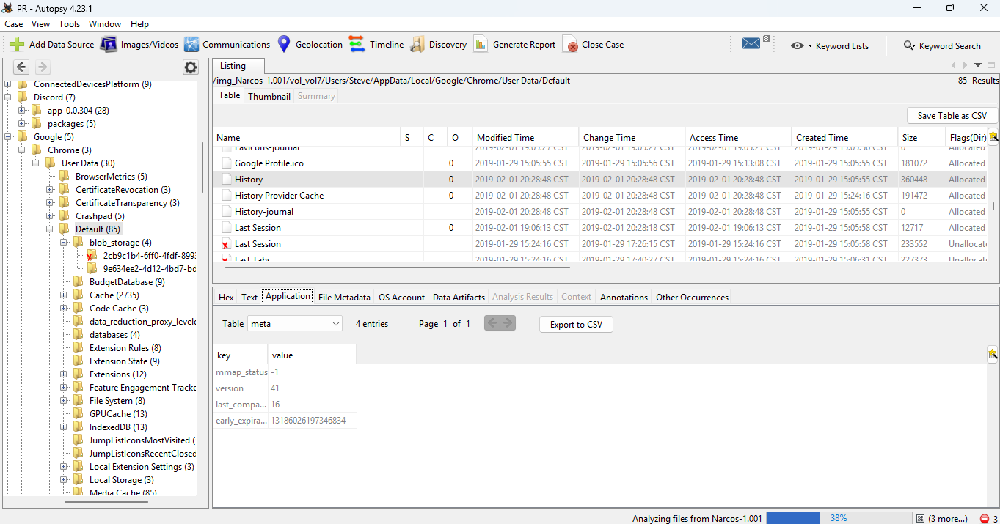
Figura 4. Carpeta Chrome\User Data\Default con History y carpeta de Microsoft Edge.
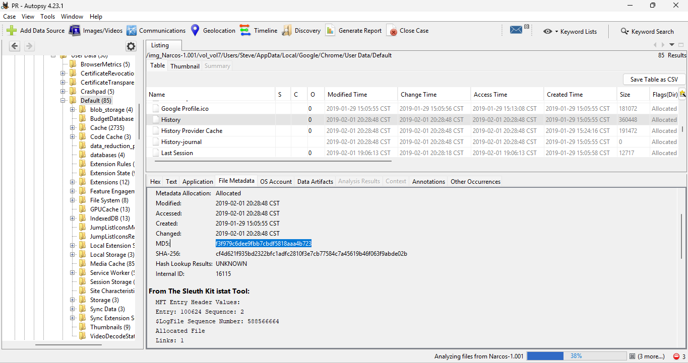
Figura 5. File Metadata de History con MD5 f3f979c6dee9fbb7cbdf5818aaa4b723.
3.3 Documentos, imágenes y metadatos
Localización y extracción de metadatos NTFS y hashes de los archivos en /Users/Steve/Documents/Misc y /Users/Steve/Downloads/Misc: airport crystals.jpg, dropoff.jpg, flightbookings.PNG, Method run.jpg y BNE.png.
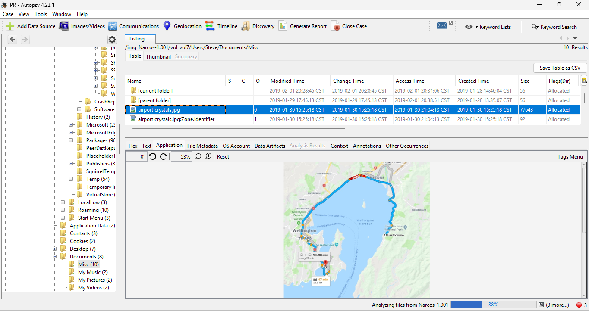
Figura 6. Ubicación y vista previa de airport crystals.jpg (47 min, 31.6 km).
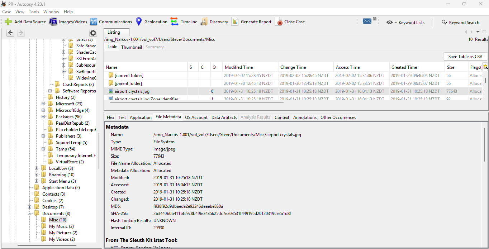
Figura 7. Creación 2019-01-31 10:25:18 NZDT (77,643 bytes).
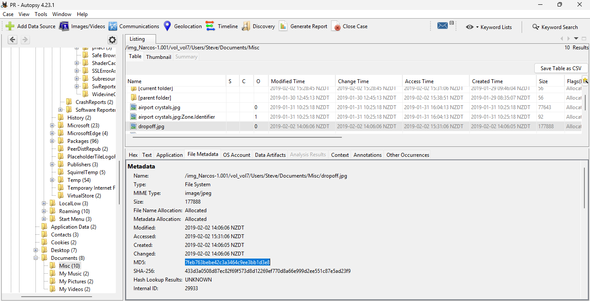
Figura 8. MD5 de dropoff.jpg: 7feb763bebe42c3a3464c9ee3bb1d3e8.
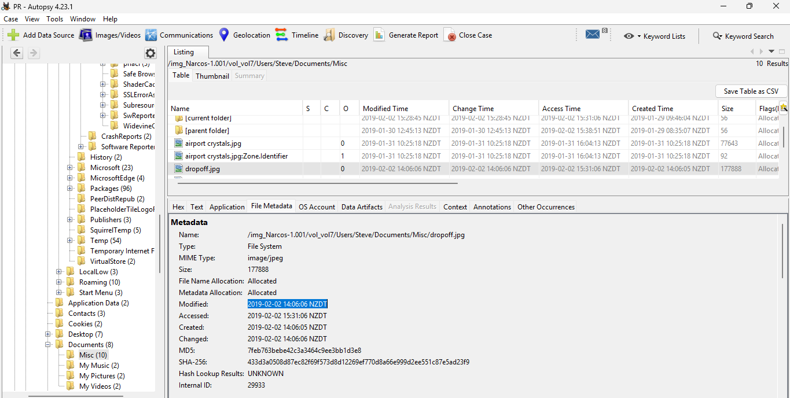
Figura 9. Modificación de dropoff.jpg: 2019-02-02 14:06:06 NZDT.
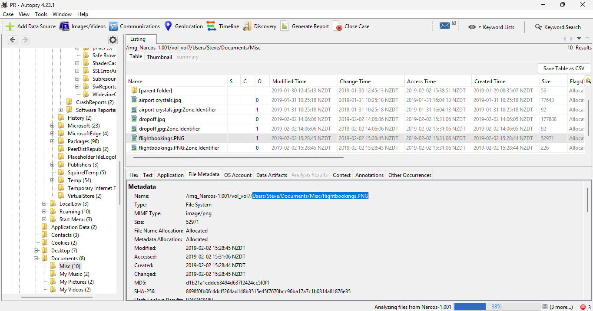
Figura 10. Ruta de flightbookings.PNG (52,971 bytes, creado 2019-02-02 15:28:44 NZDT).
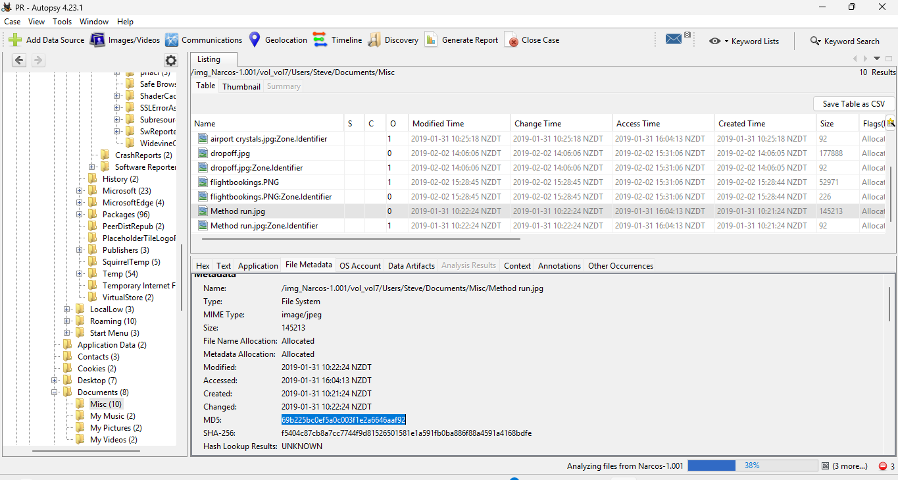
Figura 11. MD5 de Method run.jpg: 69b225bc0ef5a0c003f1e2a6646aaf92.
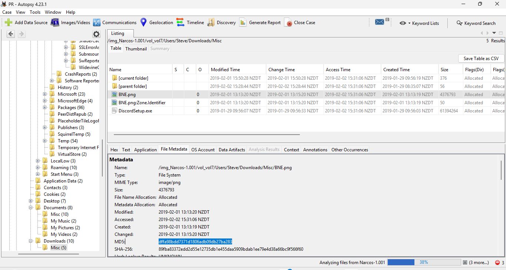
Figura 12. MD5 de BNE.png: dffa98bdd7371d1806adb09db27ba283 (Downloads/Misc).
3.4 Programas y otros artefactos
Instaladores en Downloads (Image Steganography 1.5.2 Setup.exe y TrueCrypt Setup 7.1a.exe), caché de Discord en AppData\Roaming\Discord\Cache y base de datos ActivitiesCache.db en ConnectedDevicesPlatform\2418c0082017486a (395 entradas).
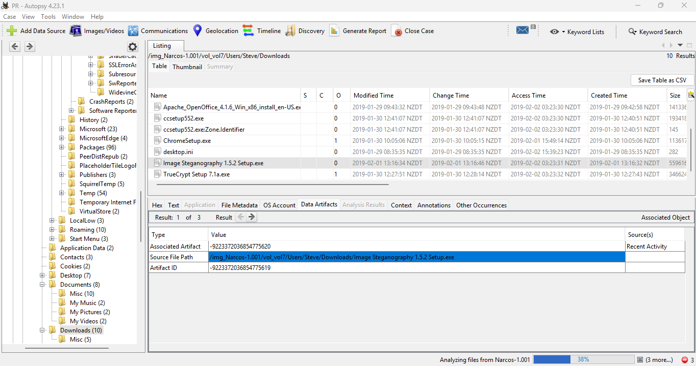
Figura 13. Image Steganography 1.5.2 Setup.exe y ruta en Data Artifacts.
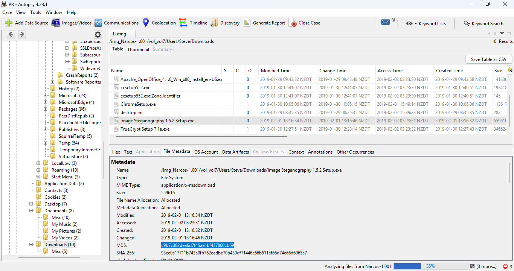
Figura 14. MD5 del instalador: c9b7c382dea6d7f45ae1bf437860cb69.
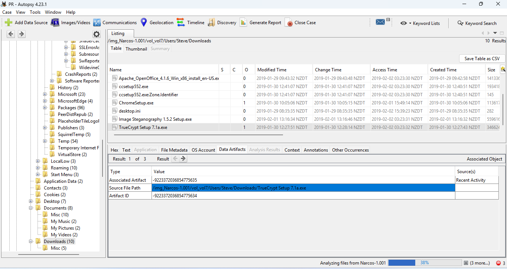
Figura 15. TrueCrypt Setup 7.1a.exe (creado 2019-01-30 12:27:43 NZDT).
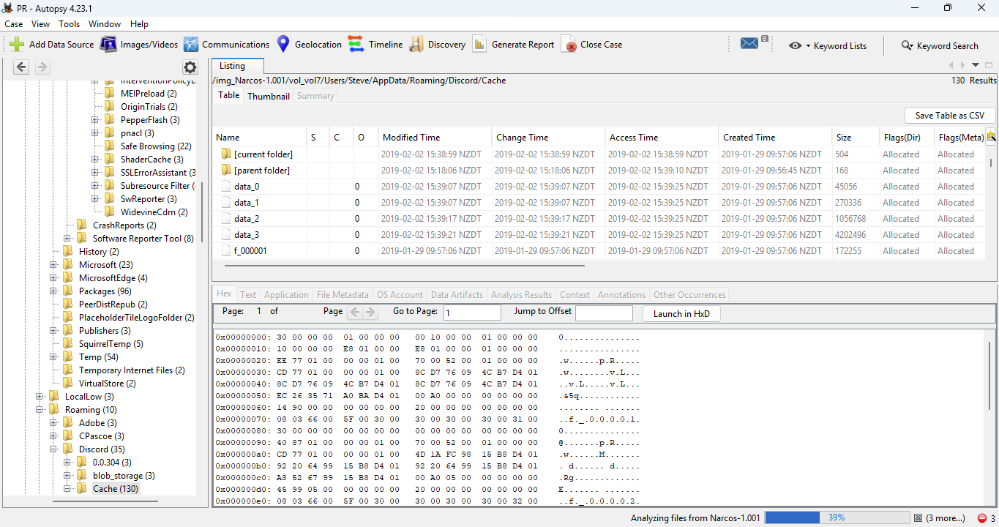
Figura 16. Discord\Cache (130 elementos, data_0 a data_3 y vista hex).
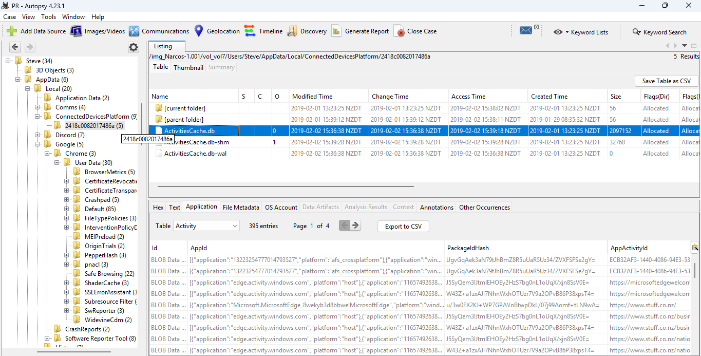
Figura 17. ActivitiesCache.db (395 entradas en tabla Activity, incluyendo Microsoft Edge).
Reconstrucción cronológica y contraste entre lo observado, la interpretación forense y lo que no puede confirmarse.
| Fecha y hora (NZDT) |
Evento en el equipo |
Categoría |
| 29/01/2019 09:56 | Se descarga DiscordSetup.exe; la caché se crea a las 09:57 y la clave de registro a las 10:00 | Comunicación |
| 30/01/2019 12:27 | Se descarga TrueCrypt Setup 7.1a.exe; carpeta Roaming\TrueCrypt a las 12:31; configuración modificada a las 13:34 | Cifrado |
| 31/01/2019 10:21 y 10:25 | Se crean Method run.jpg y airport crystals.jpg (rutas locales) | Desplazamientos |
| 01/02/2019 13:13 y 13:16 | Se crea BNE.png; se descarga Image Steganography 1.5.2 (carpeta a las 13:16:56) | Ocultamiento |
| 02/02/2019 14:06 | Se crea dropoff.jpg (Eastbourne Library) | Punto de entrega |
| 02/02/2019 15:28 | Se crea flightbookings.PNG (cotización BNE → WLG) | Viaje |
| 02/02/2019 15:39 | Se modifican los archivos data_0 a data_3 de la caché de Discord | Comunicación |
4.1 Vuelos, Brisbane y la biblioteca de Eastbourne
Pregunta: ¿Qué coincidencias sobre lugares, desplazamientos o logística muestran flightbookings, BNE.png y dropoff.jpg?
Observado
flightbookings.PNG: cotización para dos adultos. Ida el 16/02/2019 Brisbane (BNE) → Wellington (WLG), Virgin Australia, 8:45 a 15:15, directo; regreso el 23/02/2019 WLG → BNE, Qantas, con escala en Auckland. Total de AU$1,327.82 (AU$663.91 por persona).BNE.png: fotografía de un puente iluminado sobre un río, con edificios al fondo; parece el Story Bridge (identificación visual, por confirmar). Su nombre coincide con el código del aeropuerto de Brisbane.dropoff.jpg: captura de Google Maps de Eastbourne Library, 38 Rimu St, Eastbourne, Lower Hutt.
Coincidencias e Interpretación
Coincidencias: Los tres archivos apuntan a una misma logística: origen en Brisbane, destino en Wellington y un punto concreto en Eastbourne, lo que coincide con el caso (pasajeros desde Australia interceptados en Wellington y la biblioteca como lugar de entrega). Se crearon en poco más de 26 horas y los tres conservan un flujo Zone.Identifier (marcados como procedentes de una zona externa al equipo).
Interpretación: Los archivos son compatibles con la preparación de un viaje Brisbane → Wellington y de un lugar de entrega en Eastbourne, en fechas cercanas entre sí.
No puede confirmarse: Que los boletos se hayan comprado (la imagen es una cotización) ni quiénes son los viajeros (no aparecen nombres); que la biblioteca fuera el punto de entrega (la imagen solo muestra un mapa); si BNE.png contiene información oculta, ni cómo llegó cada archivo al equipo sin leer sus Zone.Identifier o el historial de descargas.
Figura 18. Cotización BNE → WLG (16 feb 2019) y WLG → BNE (23 feb 2019), AU$1,327.82.
Figura 19. Fotografía BNE.png (puente iluminado, visualmente Story Bridge).
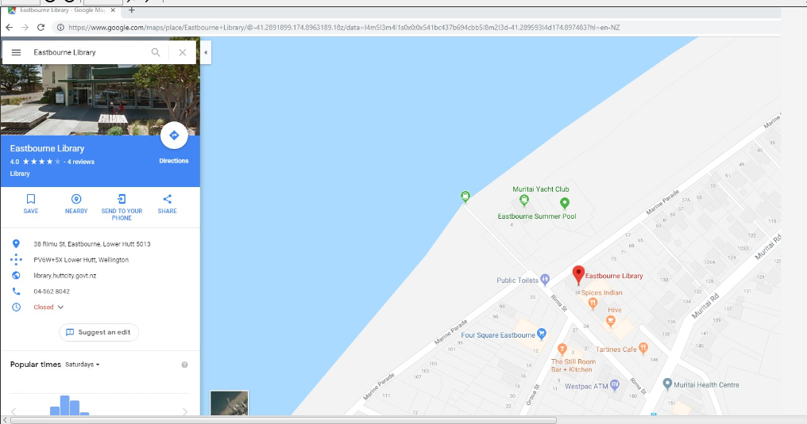
Figura 20. Google Maps de Eastbourne Library (38 Rimu St, Eastbourne, Lower Hutt).
4.2 Rutas locales: airport crystals y Method run
Pregunta: ¿Qué interpretación sobre su finalidad puede sostenerse al contrastar ambos archivos con un registro de actividad del equipo?
Observado y Contraste con el registro
Method run.jpg: ruta en coche de 54 min y 42.5 km que une Eastbourne, Wainuiomata, Naenae y Stokes Valley, con la palabra "Home" escrita a mano junto a Eastbourne. Creado el 31/01/2019 10:21:24 NZDT.
airport crystals.jpg: ruta en coche de 47 min y 31.6 km desde Eastbourne, por Petone, hacia el sur de Wellington, zona compatible con el aeropuerto. Creado el 31/01/2019 10:25:18 NZDT.
Contraste: Con los metadatos NTFS como registro de actividad, ambas imágenes se crearon con menos de 4 minutos de diferencia, comparten el mismo último acceso (31/01/2019 16:04:13 NZDT, unas 5 horas y media después) y conservan un flujo Zone.Identifier.
Interpretación y Limitaciones
Interpretación: Por su contenido y la cercanía de sus fechas, son compatibles con la planeación de desplazamientos locales: un trayecto Eastbourne – zona del aeropuerto y un circuito por suburbios de Lower Hutt con inicio o fin en "Home".
No puede confirmarse: Que las rutas se hayan recorrido, quién las elaboró o si se crearon en el equipo o se recibieron desde fuera; ni que "airport crystals" o "Method run" se refieran a sustancias ilícitas (un nombre de archivo por sí solo no lo demuestra).
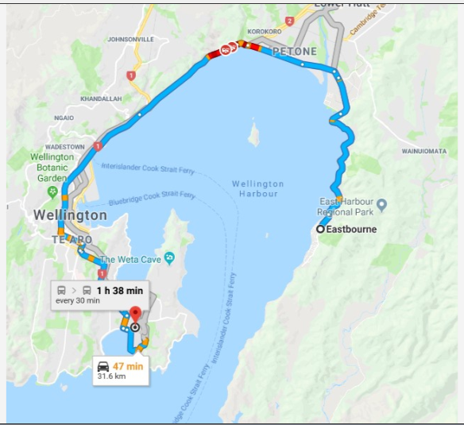
Figura 21. Ruta Eastbourne → Petone → sur de Wellington (47 min, 31.6 km).
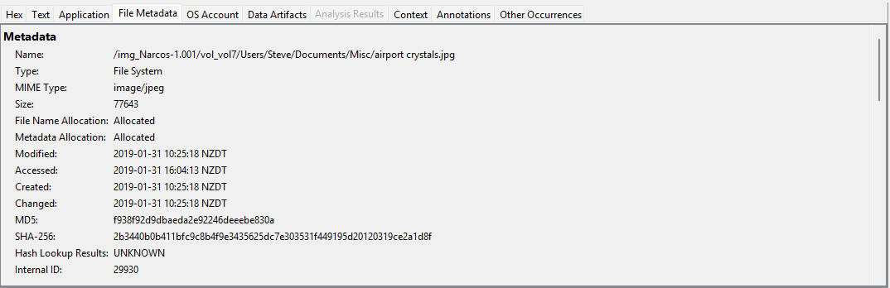
Figura 22. Metadatos de airport crystals.jpg (creado 10:25:18, acceso 16:04:13 NZDT).
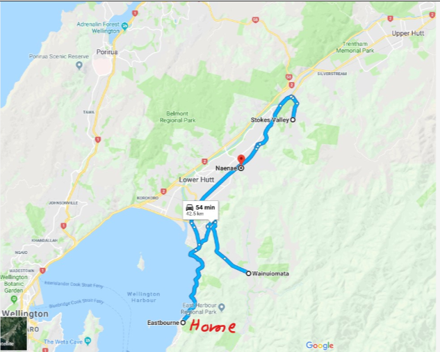
Figura 23. Circuito de 54 min y 42.5 km con anotación "Home" junto a Eastbourne.
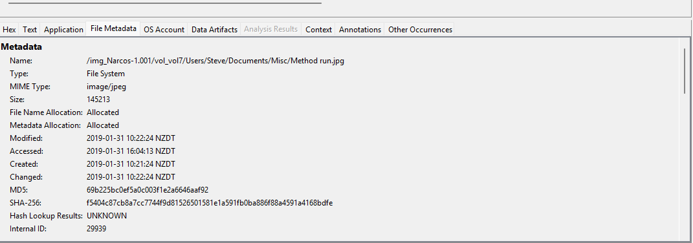
Figura 24. Metadatos de Method run.jpg (creado 10:21:24, modificado 10:22:24 NZDT).
4.3 Presencia de Discord
Pregunta: ¿Qué evidencia permite afirmar que Discord estuvo presente o se utilizó, y qué no puede concluirse sin mensajes verificables?
Observado e Interpretación
- Descarga:
DiscordSetup.exe en Downloads\Misc, creado el 29/01/2019 09:56:03 NZDT.
- Instalación y datos: carpeta
Roaming\Discord (35 elementos) con 0.0.304, Cache (130 elementos), Local Storage, GPUCache y logs; la caché se creó el 29/01/2019 09:57:06 NZDT.
- Actividad posterior: archivos
data_0 a data_3 de la caché modificados el 02/02/2019 entre las 15:39:07 y las 15:39:21 NZDT.
- Registro de Windows: clave
Software\Discord\Modules\discord_game_sdk en NTUSER.DAT, modificada el 28/01/2019 21:00:12 UTC (29/01/2019 10:00:12 NZDT).
Interpretación: Discord se descargó e instaló en el perfil Steve el 29/01/2019; la clave creada unos 4 minutos después es compatible con su apertura tras instalarse, y las modificaciones del 02/02/2019 indican actividad ese día.
No puede concluirse
Que tener la aplicación instalada equivalga a haber conversado (escribe caché y se actualiza sola), ni quién usó la cuenta, con quién se habló, qué se dijo o quién escribió cada mensaje. Haría falta recuperar mensajes verificables con identificadores de cuenta, o registros del servicio.
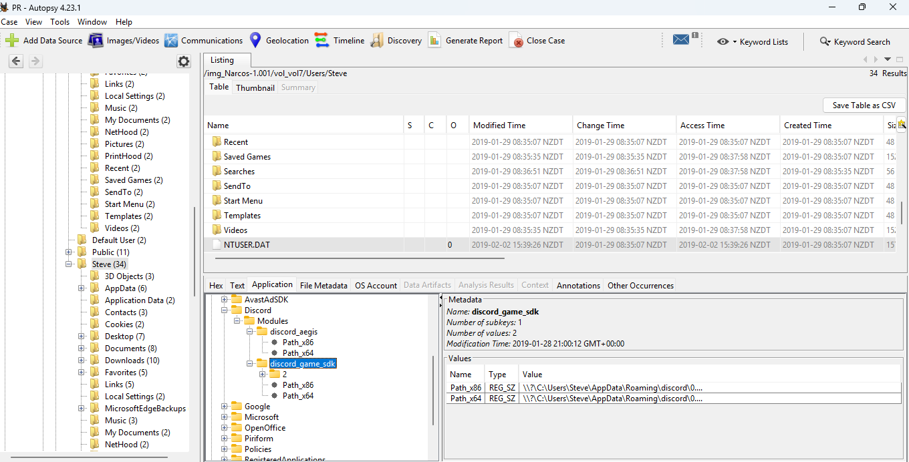
Figura 25. Clave Software\Discord\Modules\discord_game_sdk en NTUSER.DAT (2019-01-28 21:00:12 UTC).
4.4 Esteganografía y cifrado: de la descarga al uso efectivo
Pregunta: ¿Qué artefactos respaldan cada nivel (descarga, instalación, ejecución y uso efectivo) en las herramientas de esteganografía y cifrado?
| Nivel |
TrueCrypt 7.1a |
Image Steganography 1.5.2 |
Estado |
| Descarga | Instalador en Downloads, creado el 30/01/2019 12:27:43 NZDT, con Zone.Identifier | Instalador en Downloads, creado el 01/02/2019 13:16:32 NZDT | Sustentada |
| Instalación | Carpeta Roaming\TrueCrypt | Carpetas Roaming\Image_Steganography y Image_Steganography_Setup | Sustentada (carpetas) |
| Ejecución | Carpeta creada 12:31:25; Configuration.xml (2,525 bytes) creado 12:31:46 y modificado 13:34:14 NZDT | Carpeta creada el 01/02/2019 13:16:56 NZDT, 24 s después del instalador | Compatible (Prefetch/UserAssist) |
| Uso efectivo | No se observa un contenedor cifrado | No se observa una imagen procesada; BNE.png podría ser portador, sin verificar | No demostrado |
Conclusión del análisis: La descarga se sostiene con los instaladores y su Zone.Identifier; la instalación, con las carpetas del programa; la ejecución, con archivos de configuración creados al abrir el programa. El uso efectivo no está demostrado. La alerta automática "Encryption Suspected" de Autopsy sobre mpenginedb.db no es un indicio: es una base de datos de Windows Defender, no un archivo del usuario.
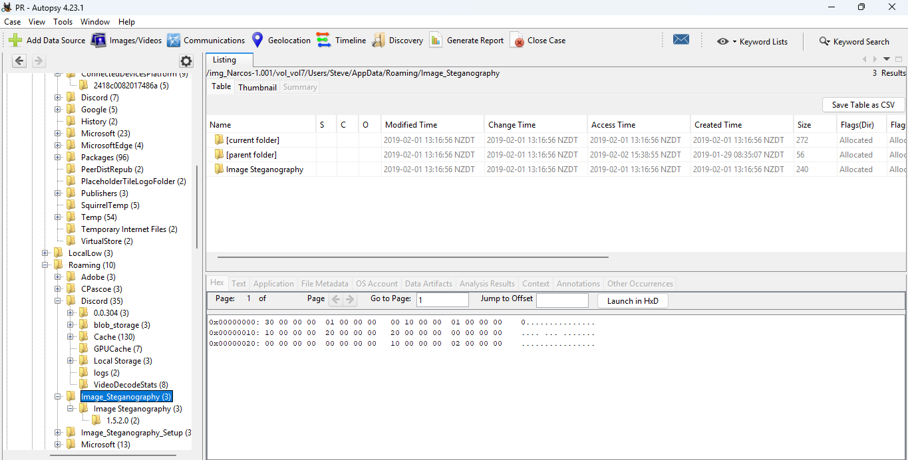
Figura 26. Roaming\Image_Steganography (creada 2019-02-01 13:16:56 NZDT, v1.5.2.0).
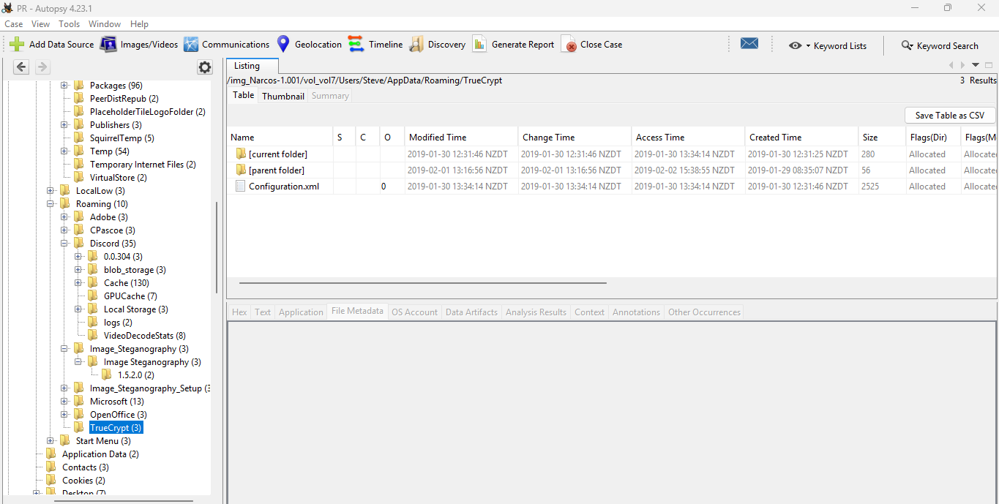
Figura 27. Roaming\TrueCrypt con Configuration.xml (2,525 bytes, modificado 13:34:14 NZDT).
4.5 Hipótesis y explicación alternativa
Hipótesis: El equipo SK-DESKTOP (perfil Steve) se usó entre el 29/01/2019 y el 02/02/2019 para preparar la logística de un traslado Brisbane → Wellington y de un punto de entrega en Eastbourne, con herramientas de comunicación (Discord) y de ocultamiento de información (TrueCrypt e Image Steganography).
| # |
Hallazgo que sustenta la hipótesis |
| 1 | Viaje: flightbookings.PNG (BNE → WLG el 16/02/2019, dos adultos) y BNE.png, creados el 02/02/2019 15:28:44 y el 01/02/2019 13:13:19 NZDT. |
| 2 | Punto de entrega: dropoff.jpg, captura de Eastbourne Library creada el 02/02/2019 14:06:05 NZDT; la biblioteca es uno de los lugares de entrega del caso. |
| 3 | Desplazamientos: Method run.jpg (31/01/2019 10:21:24, con "Home" junto a Eastbourne) y airport crystals.jpg (31/01/2019 10:25:18), dos rutas creadas con minutos de diferencia. |
| 4 | Herramientas: Discord (instalado el 29/01), TrueCrypt (descargado y con configuración el 30/01) e Image Steganography (descargado y con carpeta el 01/02), en tres fechas consecutivas. |
Explicación alternativa: El equipo pudo ser usado por otra persona, o por su titular con fines legítimos (un viaje, curiosidad por mapas, privacidad). Cotizar vuelos, consultar rutas e instalar herramientas de cifrado o mensajería son actividades legales y comunes. No se recuperó contenido que las relacione con drogas, y el vínculo con los hechos proviene del escenario, no de un dato del disco que identifique a quien usaba el equipo.
- El disco contiene evidencia compatible con la planeación de un viaje Brisbane → Wellington, la consulta del punto de entrega en Eastbourne y el traslado hacia la zona del aeropuerto.
- Se instalaron herramientas de mensajería y de cifrado/esteganografía en fechas consecutivas, lo que justifica profundizar la investigación.
- No está demostrado el contenido de las comunicaciones, el uso efectivo de las herramientas de ocultamiento ni la identidad de quien operaba el equipo.
| # |
Evidencia adicional necesaria y propósito |
| 1 | Mensajes de Discord recuperados (por ejemplo, desde la caché) con identificadores de cuenta, o registros del proveedor, para verificar interlocutores y contenido. |
| 2 | Registros de la aerolínea o de aduana que vinculen una reserva real con los pasajeros del caso (John Fredricksen y Jane Esteban), o el volcado de memoria del equipo si el escenario lo incluye. |
Trabajo complementario sugerido:
- Leer el contenido de los
Zone.Identifier y el historial de descargas para establecer cómo llegó cada archivo al equipo.
- Revisar
Prefetch y UserAssist para confirmar la ejecución de TrueCrypt e Image Steganography.
- Aplicar este análisis a
BNE.png para verificar si contiene información oculta.